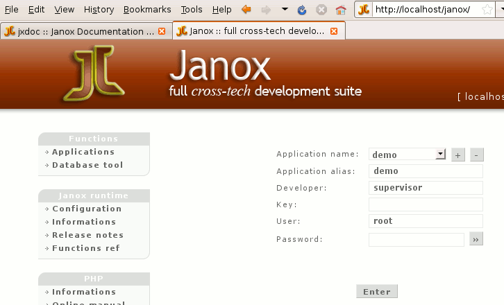

|
| |||||||||||||||||||
Questo modulo introduce il funzionamento di Janox Runtime, le modalità dell'interfaccia "GUI-like" e gli strumenti di accesso e amministrazione.
Ci sono due modalità di accesso all'applicazione a runtime:
Effettuando in login con il campo "Developer" valorizzato si indica alla runtime di Janox che vogliamo attivare anche i servizi di controllo e si fornisce il nome del programmatore.
Il nome del programmatore viene utilizzato da Janox per eseguire i programmi modificati dal programmatore stesso ma non ancora confermati per tutti.
Questo comportamento è decisamente interessante per testare le modifiche in un ambiente di sviluppo in team sul progetto, e di confermarle solo dopo averle verificate.
Premere il pulsante Enter per accedere
| © 2008 Software4U.it | ||||